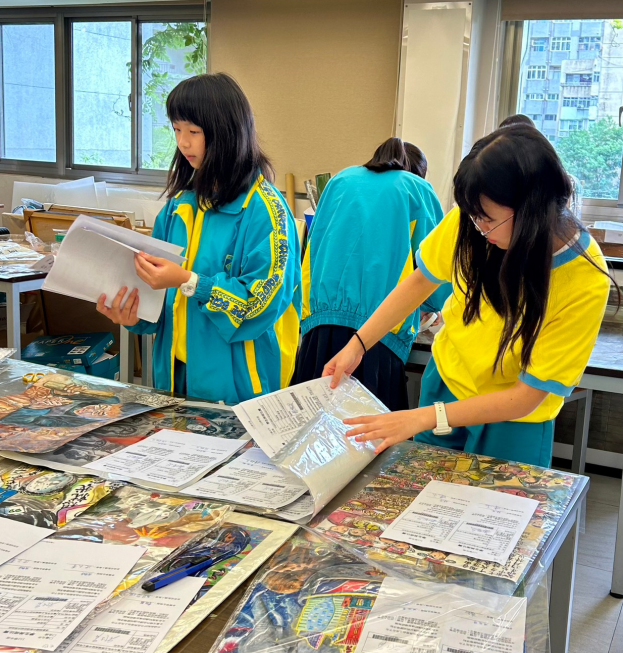

師大商圈的沒落研究
分析住商衝突引發的外部成本，研究龍泉里里長與店家間的抗爭過程。實地考察龍泉街實施的「速限 20」與「波浪形人行道」改善成效。
圖：龍泉街波浪形人行道實察拍攝
在文字中漫步，在音軌中生活。致力於社會觀察與跨領域實踐，透過實地訪查、文學創作與藝術志工服務，記錄每一段向光而行的成長波紋。
分析住商衝突引發的外部成本，研究龍泉里里長與店家間的抗爭過程。實地考察龍泉街實施的「速限 20」與「波浪形人行道」改善成效。
圖：龍泉街波浪形人行道實察拍攝
針對刑法第 19 條與自行停藥責任歸屬進行探討。省思死刑釋憲中法官「一致決」門檻與被害家屬權益之平衡。
操作朋億*、漢翔等個股。在 CMoney 模擬競技場中達成 3.3% 報酬率，位居全班第 15 名，體會設立停利點之重要性。
圖：投資模擬競技場報告畫面
從文學獲獎作品到心理學理論，拆解鏡像中的自我認知。
引用顧里理論，分析他人評價如何形塑我的自我認知。從一度唯唯諾諾的「爛好人」，轉向學會拒絕並找回內在樂觀的本質。
《最後吔火車站》描繪世昌與文英跨越六十年的思念；《權謀璀璨》則構建上海歌舞廳背景下的間諜權謀與家族抉擇。
研究 Shockvertising 廣告倫理；製作影片探討 AI 生成技術帶來的「資訊泡泡」與 Deepfake 對人類反思能力的影響。
演出歌曲〈終究還是因為愛〉。在樂團成員間的吵架、埋怨與互補中，學會體諒與包容的藝術。

圖：2024/5/19 芳和×薇閣聯合成發紀錄
親手縫製女配角裙裝與協助道具組製作旋轉燈。當與編劇意見分歧時，學會退讓並聆聽，達成有效的良性溝通 。

圖：親手為演員縫製女配角裙裝紀錄
負責佈置祈望亭感恩主題。協助北市五項藝術比賽作品之收送件整理，掌握嚴謹的行政流程。

圖：五項藝術比賽美術類作品整理現況
擔任競賽組服務學員。精準掌控賽場節奏（2 分、1 分及 30 秒訊號），深入學習英文辯論流程。
完成線上語言軟體 50 部分課程，掌握 40 音發音技巧。
北投地理實察：研究第一間民營溫泉旅館「天狗庵」遺址、瀧乃湯皇太子探訪之「飛石」文化，並實地記錄地熱谷之變遷。